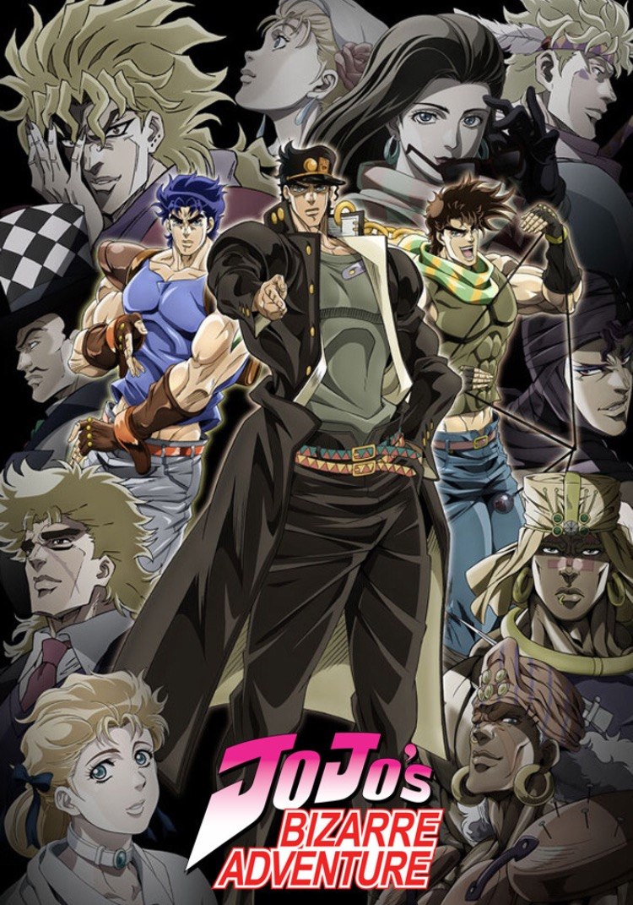

Experience the intense fight for survival in Attack on Titan, where
giant monsters threaten humanity.
Follow brave heroes as they battle to protect what's left of the world
Bleach
Bleach follows Ichigo Kurosaki, a teenager with the ability to see
ghosts,
as he becomes a Soul Reaper to protect the living and battle evil spirits. Alongside friends and
allies, he faces powerful enemies in a world of supernatural forces.
Blue Lock
Blue Lock follows Yoichi Isagi, a young soccer player chosen to compete
in a high-stakes training program designed to create Japan's next top striker.
As he faces intense challenges, he must prove his skills and outshine rivals to secure his place
on the national team.
Boruto
Boruto: Naruto Next Generations follows Boruto Uzumaki,
the son of Naruto, as he navigates life as a ninja in a world of peace and technology.
Struggling to live up to his father's legacy, Boruto faces new challenges, friendships, and
enemies.
.
Demon Slayer
Demon Slayer tells the story of Tanjiro Kamado,
a kind-hearted boy who becomes a demon slayer after his family is killed and his sister is
turned into a demon.
He embarks on a dangerous journey to find a cure for his sister and defeat the demons
threatening humanity.
Fire Force
Fire Force follows Shinra Kusakabe,
a young firefighter with the ability to ignite his feet at will, as he joins a special team to
battle mysterious fire-wielding creatures.
Together, they fight dangerous infernals while uncovering dark secrets about spontaneous human
combustion.
Jujutsu Kaisen
Jujutsu Kaisen follows Yuji Itadori, a high school student who gains powerful abilities after swallowing a cursed object,
and joins a school of jujutsu sorcerers. He battles deadly curses while trying to control the dark power within him.

Jojo Bizarre Adventures
JoJo's Bizarre Adventure follows the Joestar family across generations as they battle supernatural enemies using unique powers known as Stands.
Each story arc features epic battles, colourful characters, and mind-bending adventures.
Kaiju No. 8
Kaiju No. 8 follows Kafka Hibino, a man who dreams of joining the military to fight giant monsters known as kaiju.
After accidentally transforming into a kaiju himself, he must navigate his new life and protect humanity from the very creatures he once fought.
My Hero Academia
My Hero Academia follows Izuku Midoriya, a boy born without powers in a world where most people have them, as he trains to become a hero. With the help of his mentors and friends,
he strives to protect others and uncover the mysteries of his own hidden abilities.
One Piece
One Piece follows Monkey D. Luffy and his crew of pirates as they search for the legendary treasure known as the One Piece.
Along the way, they face powerful enemies, make new friends, and pursue their dreams on the high seas..
Record of Ragnarok
Record of Ragnarok pits powerful gods against legendary humans in a series of intense battles to decide the fate of humanity.
With the survival of mankind at stake, ancient heroes fight for their lives in a battle for the ages..